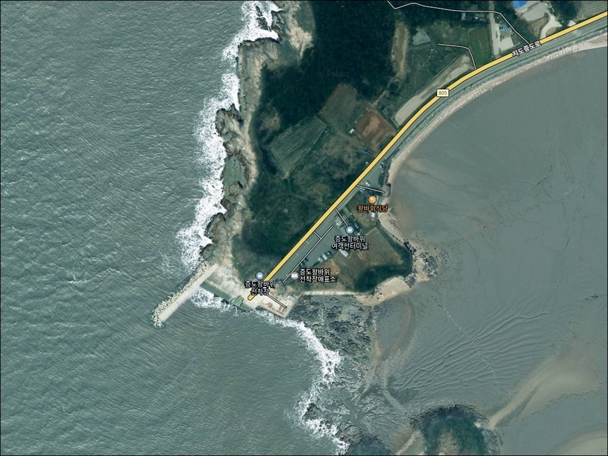
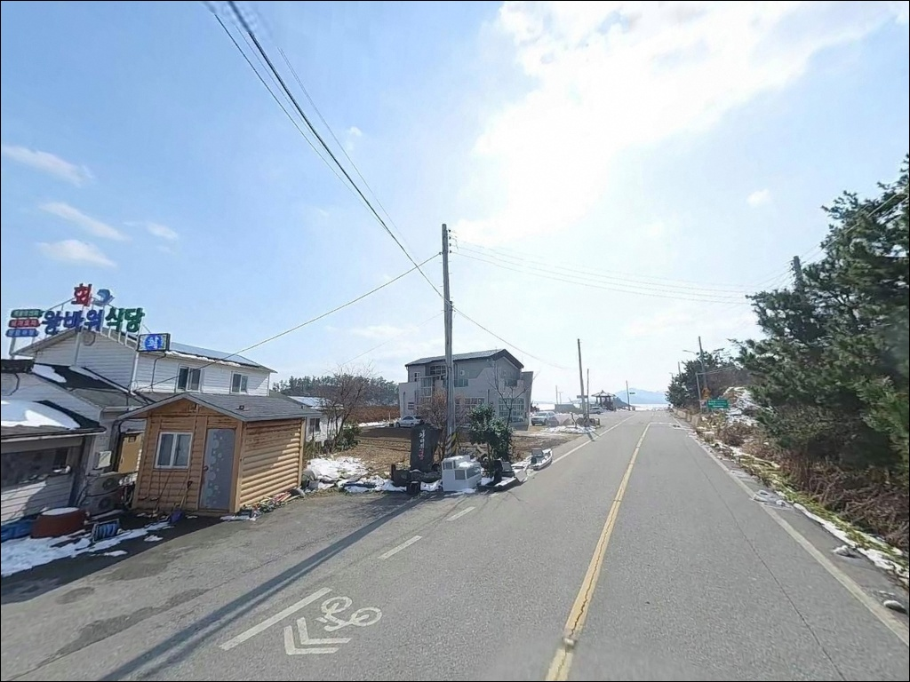
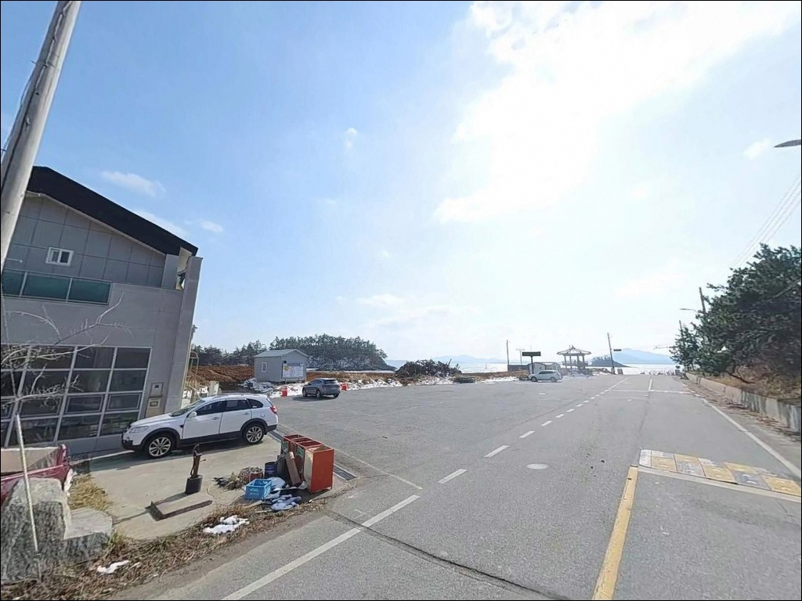
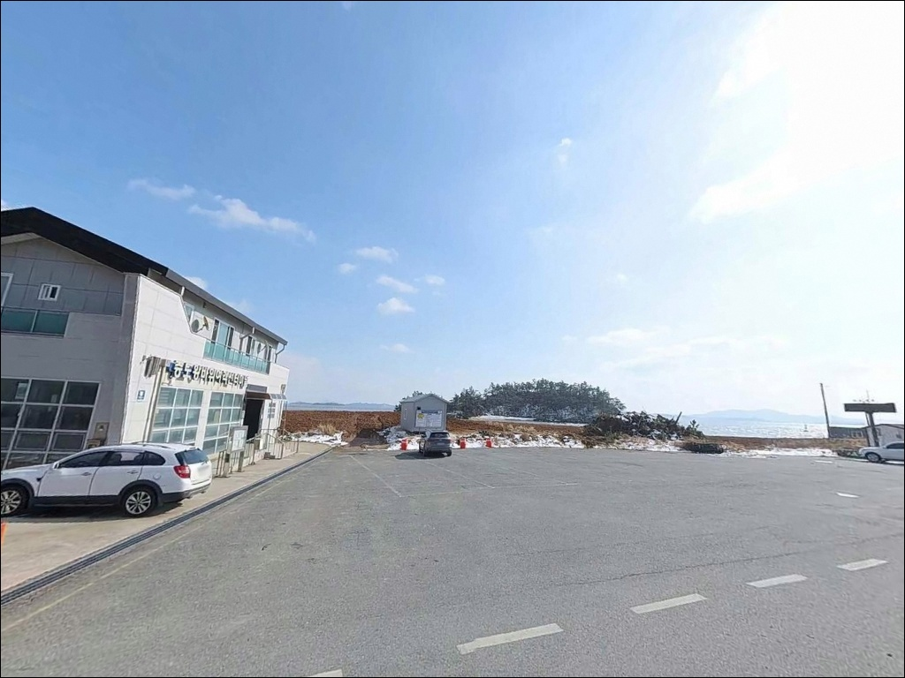
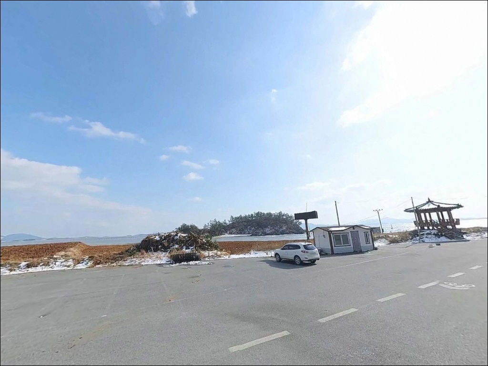
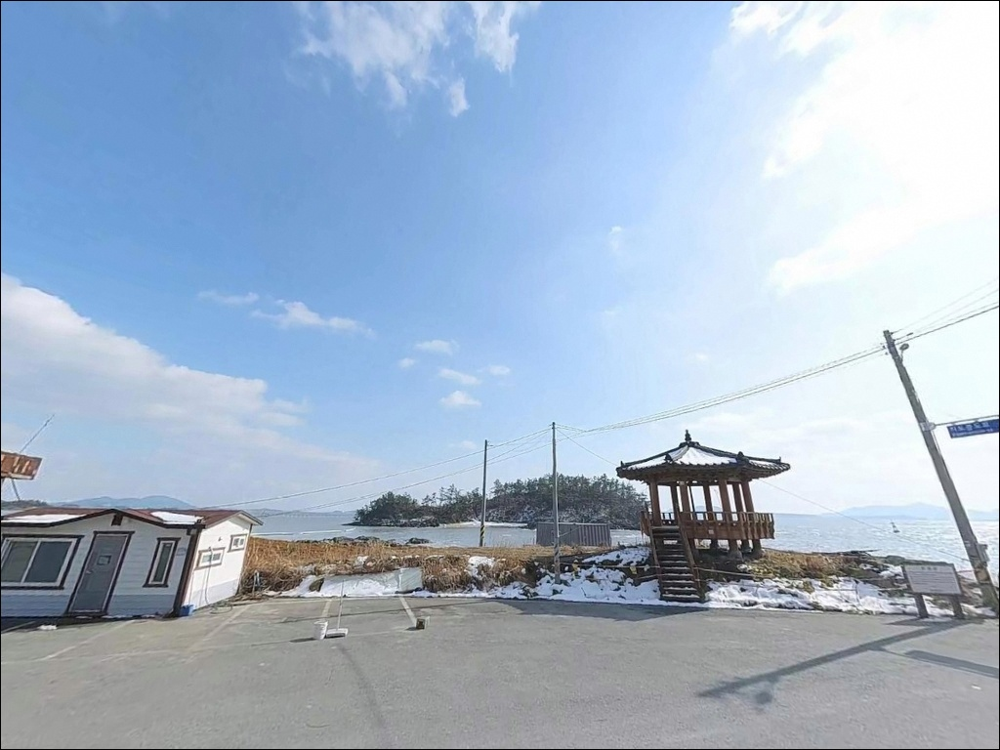
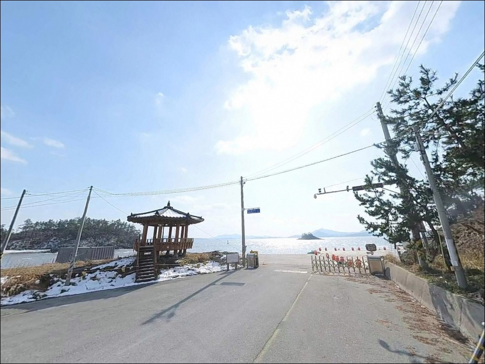
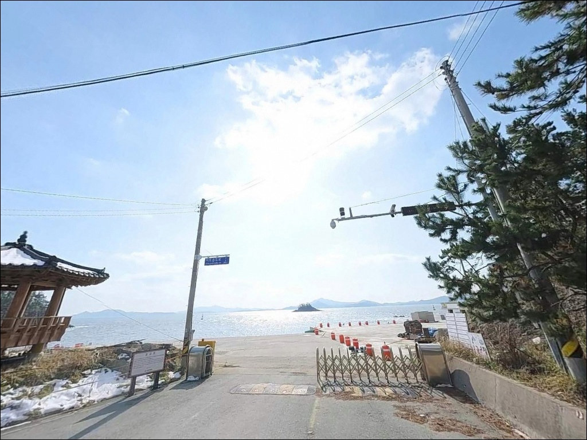
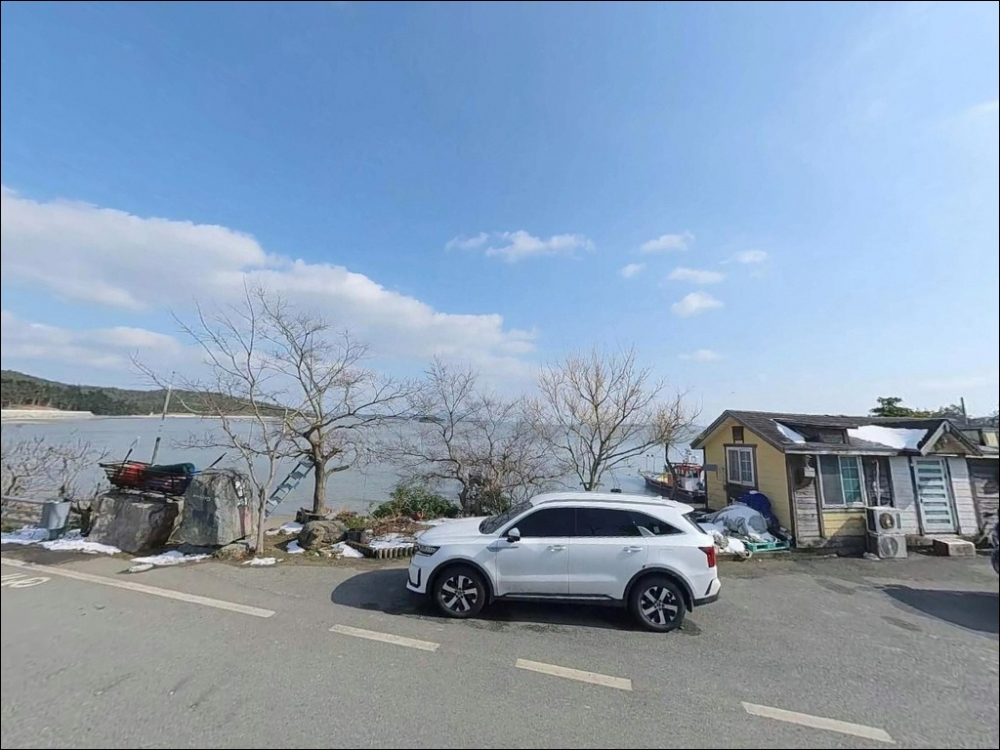

증도왕바위선착장, 증도 전남 신안군 풍경이 깊은 여운을 남기는 차박, 낚시 해안


포인트 안내
증도 왕바위선착장
전남 신안군 증도면 우전리 산 115-6
물때 계산 없이 왕바위선착장을 찾으면
자은도 방면 수로에서 압축된 조류가
어떤 채비도 통제하기 어려운 상태로 만들어 버립니다.
사리 전후 조류가 절정일 때 선착장 끝단에 서면
채비 손실만 반복되며 낚시 자체가 성립하지 않는 조건이 됩니다.
이 글은 증도 왕바위선착장의 지형 구조와 진입 여건,
낚시 방식별 공략 조건에 집중합니다.
조황 단정과 특정 어종 보장은 이 글의 범위에 포함하지 않습니다.
전남 신안군 증도면 우전리 남단,
자은도 고교선착장과 카페리로 연결되는
왕바위선착장은 두 섬 사이 해협을 정면으로 마주한
수로형 선착장입니다.
선착장 명칭에 등장하는 '왕바위'는
인근 암초 지형에서 유래한 이름으로,
여밭과 갯바위가 섞인 바위 지형이
이 포인트 낚시 여건의 핵심 변수를 구성합니다.

1. 진입 동선과 포인트 접근성
왕바위선착장은 지도증도로를 따라
증도 남단까지 이어지는 포장도로 끝에 위치합니다.
자은도행 카페리(슬로시티호)가 운항하는
여객선 터미널 구조로, 차량 탑재가 가능한
차도선이 접안하는 선착장 특성상
선착장 진입부와 대기 공간은 넓은 편입니다.
일반 승용차와 중형 SUV 모두 접근에 어려움이 없습니다.
섬 내부 도로는 왕복 2차선 이하 수준의
읍면 도로 구간이 포함되어 있습니다.
대형 차량이라면 선착장 진입로 마지막 구간 폭을
출발 전 위성지도로 먼저 확인하는 편이 안전합니다.
회차 공간은 선착장 특성상 충분히 확보된 구조이며
진출입 자체에는 큰 어려움이 없는 수준입니다.
주차는 선착장 전면 주차 구역과
진입로 초입 공터를 활용하는 방식이 일반적입니다.
여객선이 하루 4회 접안하는 시간대에는
차량 동선이 집중되므로
선박 운항 동선을 먼저 확인한 뒤
낚시 목적 주차 자리를 정하는 것이 기본 매너입니다.

2. 차박 환경과 야간 체류 여건
증도는 슬로시티로 지정된 섬으로
야간 조명 최소화 정책이 적용된 지역입니다.
선착장 주변 가로등은 제한적이며
선착장에서 멀어질수록 어두운 구간이 이어집니다.
야간 낚시와 차박 모두
개인 헤드랜턴과 보조 조명이 필수입니다.
여객선이 하루 4회 접안하는 시간대에는
차량 통행이 집중됩니다.
운항이 없는 심야 시간대는
차량 통행이 거의 없고 민가 밀집도도 낮아
조용한 환경이 유지됩니다.
낚시 후 짧게 머무는 용도로는 활용이 가능하지만
선착장 바로 앞보다 진입로 초입 공터가
차박 공간으로 더 여유 있는 선택입니다.
자은도 방면으로 열린 지형 구조상
기상에 따라 풍속 영향을 직접 받는 상황이 생깁니다.
출발 전 풍속 예보를 반드시 확인하고
강풍 예보가 있는 날에는
선착장 인근보다 바람이 덜한 지점을
미리 파악해 두는 편이 좋습니다.


3. 주변 편의시설 및 인프라 현황
선착장 반경 1~2km 이내에
왕바위식당이 위치해 있어
현지 식사 해결이 가능합니다.
엘도라도 리조트도 선착장과 인접한 거리에 있어
숙박·식음료 시설을 이용할 수 있습니다.
화장실은 여객선 터미널 건물 내에 갖춰져 있습니다.
다만 운항 시간 이외에는 이용이 제한될 수 있어
사전에 확인하는 편이 좋습니다.
반경 3km 이내에는 우전해수욕장이 있으며
해수욕장 주변으로 소규모 상가가 형성되어 있습니다.
증도 전체가 소규모 섬 지역으로
대형 편의점이나 마트는 섬 내에서 찾기 어렵습니다.
출발 전 지도읍 등
연륙교를 건너기 전 단계에서
식수·얼음·낚시 소품·연료를 모두 준비하는 것이
현실적인 방식입니다.
응급 상황 발생 시 증도면 내 의료시설은
보건지소 수준에 머물며
중증 응급 상황이라면 신안군 본섬 또는 목포까지
이동해야 하는 구조입니다.
비상약품과 연료는
출발 전 반드시 챙겨야 할 항목입니다.

4. 물때를 놓치면 낚시가 안 되는 이유
왕바위선착장 방문에서
가장 먼저 확인할 항목은 물때입니다.
자은도와 증도 사이 수로는
서해 조수간만 차를 그대로 받아내는 구조로
사리 전후에는 조류가 지나치게 강해
채비 컨트롤 자체가 어려워집니다.
바다타임 증도우전 기준으로 물때를 먼저 확인하고
조금 전후 또는 만조 전후 타이밍을 계산해
출발 시각을 정하는 것이 기본입니다.
자은도와 증도 사이 수로에서는
서해 조류가 해협 구간에 압축되어 흐르기 때문에
물때 타이밍이 낚시 성패를 가르는 결정적 변수입니다.
여객선 운항 시간표도 사전에 확인해야 합니다.
하루 4회 카페리가 접안하는 시간대에는
선착장 슬로프와 접안부 진입이 제한됩니다.
신안군 공식 교통정보(tour.shinan.go.kr)에서
운항 시간을 미리 파악해 두면
현장에서의 자리 운용 혼선을 줄일 수 있습니다.
증도는 유네스코 생물권보전지역이자
람사르습지로 등록된 갯벌을 포함하는 지역입니다.
갯벌 내 무단 채집과 쓰레기 투기는 삼가는 것이 기본이며
여객선 접안 구역과 어선 동선을 막지 않는 자리 선택이
선착장 낚시의 원칙입니다.
야간에는 구명조끼와 충분한 조명을 반드시 갖추고
젖은 선착장 구조물 위 이동은 각별히 주의해야 합니다.

5. 지형 기반 낚시 여건 분석
왕바위선착장의 핵심 지형 요소는 두 가지입니다.
선착장 끝단과 측면으로 이어지는 직벽 구조,
그리고 자은도 방면으로 열린 수로입니다.
수로를 따라 조류 흐름이 살아있는 구간에서
선착장이 돌출된 형태를 갖추고 있어
흐름을 타는 어종이 지나는 길목 조건을
자연스럽게 갖춘 포인트입니다.
선착장 명칭의 기원인 '왕바위'는
선착장 인근 바위 지형을 가리킵니다.
이 일대에는 여밭과 갯바위 지형이 섞여 있어
암초를 중심으로 서식하는 어종과
수로를 오가는 회유성 어종이
함께 기대해볼 수 있는 구조입니다.
방파제와 갯바위 경계 구간은
탐색해볼 만한 포인트 자리입니다.
서해 특유의 조수간만 차가 큰 해역으로
간조 시에는 갯벌이 넓게 드러나는 구간이 생깁니다.
선착장 끝단은 여객선이 운항하는 항로 특성상
일정 수심이 유지되는 지점이며
수심 변화가 급격한 구간 경계를 찾는 것이
이 포인트 공략의 출발점입니다.
조류가 흐르는 타이밍에
선착장 끝단 쪽으로 채비를 보내는 방식이
이 지형에서 기본이 되는 접근입니다.
출조 전 증도우전 일대 최신 조황을
먼저 검색해 보시기 바랍니다.


6. 포인트에 어울리는 낚시 스타일
이 포인트에서 가장 기본이 되는 스타일은
원투낚시입니다.
선착장 끝단 또는 측면에서
수로 방향으로 채비를 던져
중·장거리 바닥을 탐색하는 방식이
이 지형 구조와 잘 맞습니다.
붕장어, 숭어, 노래미 등
서해 바닥층 어종을 기대해볼 수 있는 여건으로
야간~새벽 시간대가 효율적입니다.
루어낚시는 선착장 발밑 직벽 구간과
왕바위 인근 암초 경계를 공략하는 방식이 잘 맞습니다.
수로 조류가 살아나는 타이밍에
소형 메탈지그나 바이브 계열 루어를 흘리면
농어, 우럭 등을 기대해볼 수 있습니다.
가을 시즌에는
주꾸미·갑오징어 에깅도 이 수로 구조에서
시도해볼 만한 방식입니다.
볼락 라이트게임도 노려볼 수 있습니다.
암초 지형이 발달한 왕바위 인근은
볼락 서식에 적합한 환경 조건을 갖추고 있습니다.
야간에 소형 지그헤드 채비로
구조물 주변과 암초 경계를 천천히 탐색하는 방식이
이 포인트 지형에 어울립니다.
찌낚시는 조류가 흐르는 수로 쪽으로
채비를 흘리는 방식이 가능합니다.
다만 서해 갯벌 지형 특성상
간조 시 바닥층이 뻘 구간으로 변하는 경우가 있어
밑걸림 여부를 현장에서 먼저 확인하는 편이 좋습니다.
조류가 살아있는 타이밍에 시도하는 것이 기본입니다.

7. 대안 포인트와 플랜 B 동선
왕바위선착장 여건이 여의치 않을 때
가장 먼저 이동할 곳은
증도 검산 방파제입니다.
증도 북부에 위치한 방파제로
야간 원투낚시 포인트로 알려진 곳이며
같은 섬 내에서 이동할 수 있어
플랜B로 운용하기 수월한 구조입니다.
우전해수욕장 방면 해안선도
탐색해볼 만한 대안입니다.
우전리 해안도로 끝 구간에서
원투낚시 시도가 가능하며
갯바위 구간이 일부 포함되어 있어
루어 방식도 병행할 수 있습니다.
만조와 간조 시간대에 따라
접근 가능한 구간이 달라지므로
물때 기준으로 동선을 잡는 것이 기본입니다.
자은도 고교선착장은
왕바위선착장과 카페리로 직접 연결되는
대안 포인트입니다.
유사한 구조의 도서 선착장 환경을 갖추고 있어
같은 해역에서 다른 자리를 탐색하고 싶을 때
선택지로 고려해볼 수 있습니다.

준비를 갖추면 달라 보이는 포인트
증도 남단 왕바위선착장
원투낚시와 루어를 함께 운용하고 싶은 낚시인이라면
왕바위선착장의 수로형 지형과
인근 왕바위 암초 구조는 시도해볼 만한 조건입니다.
물때 타이밍을 잘 잡으면
서해권 도서 선착장의 전형적인 낚시를
조용한 환경에서 즐길 수 있는 곳이기도 합니다.
반면 섬 진입 전 준비를 소홀히 하거나
물때를 놓치고 사리 전후에 도착하면
현장에서의 대응이 어렵습니다.
슬로시티 섬의 제한적인 야간 조명과
편의 인프라 부족은
사전에 충분히 대비해야 할 조건이며
물때·기상·자급 준비 이 세 가지를
완비하고 들어가는 것이 기본 전제입니다.
낚시를 마치고 조용한 하룻밤을 원하는
차박 여행자라면
선착장 인근보다 우전해수욕장 방면이
더 여유 있는 환경을 제공합니다.
물때와 여객선 시간을 먼저 맞추고
증도 남단 해협 앞에서
낚시와 하룻밤을 함께 엮어보기에
나쁘지 않은 선택지입니다.